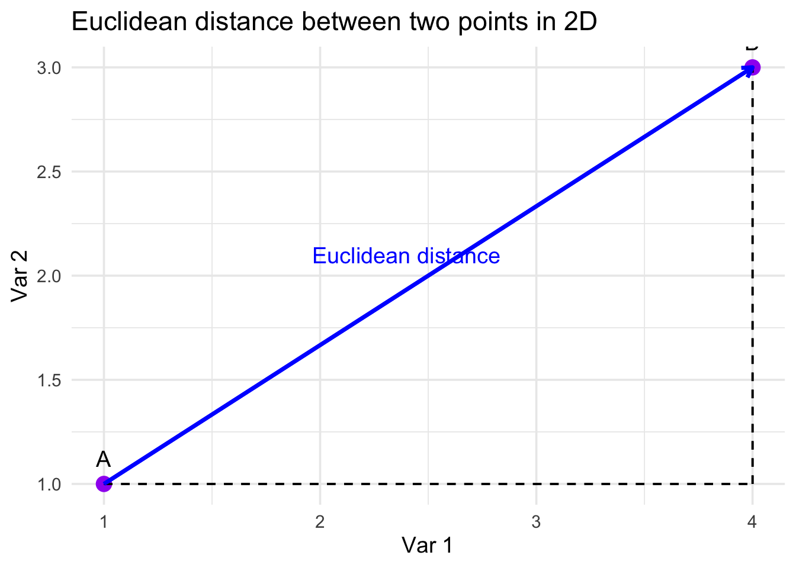
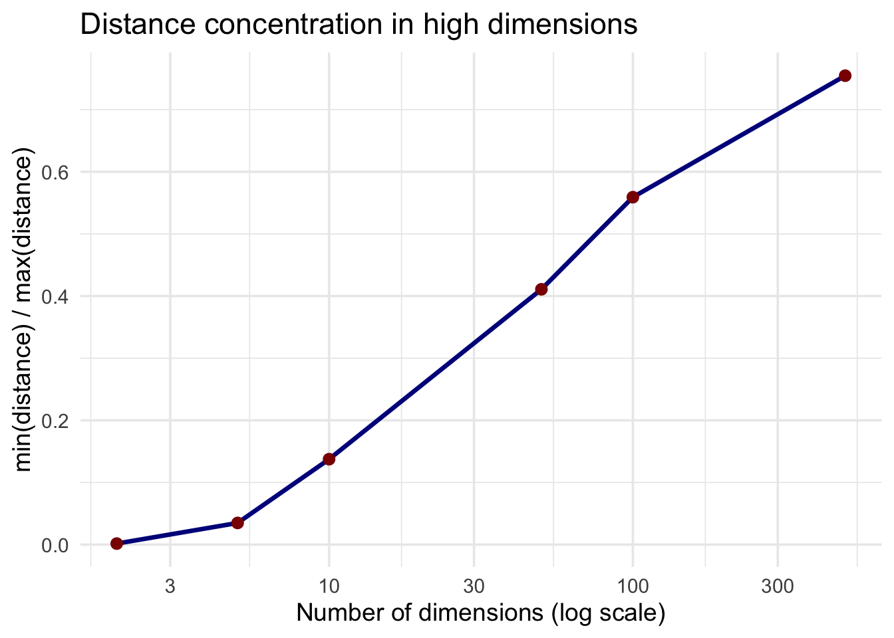
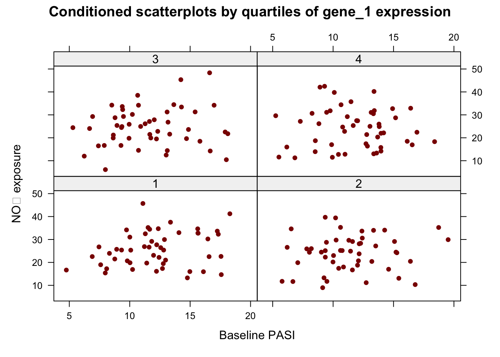
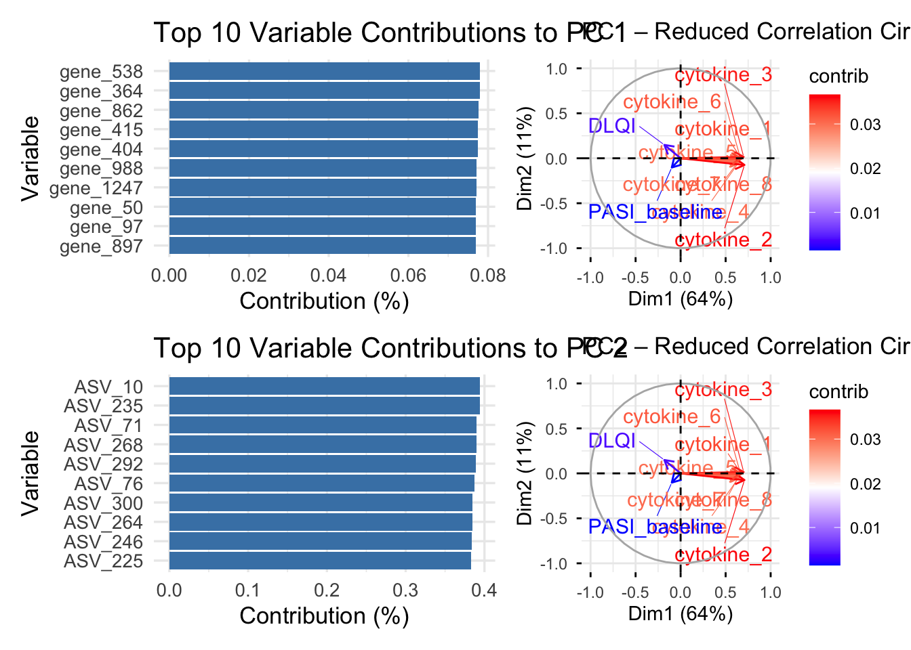
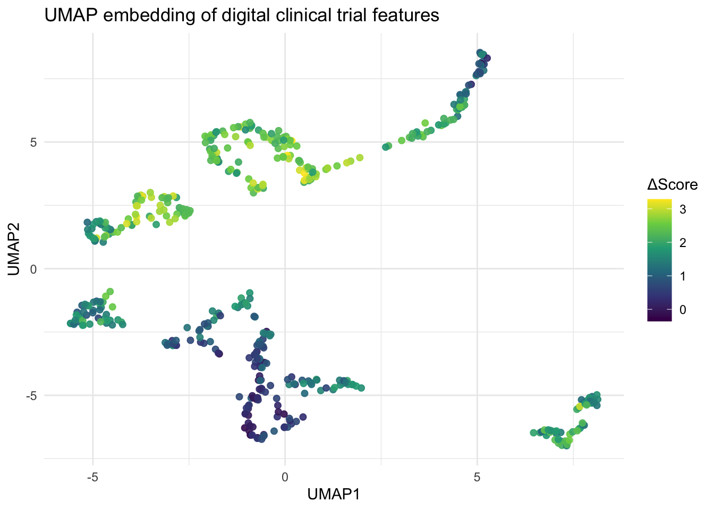

To anchor the ideas in this chapter, we begin with a example dataset inspired by advanced therapeutic technologies in dermatology. The clinical setting is moderate-to-severe psoriasis, a chronic inflammatory skin disease characterised by keratinocyte hyperproliferation, immune dysregulation involving the IL-17/IL-23 axis, and substantial patient-to-patient heterogeneity. Psoriasis is particularly well suited for illustrating high-dimensional data challenges because its biology spans multiple layers: immune signalling in the skin, microbial community shifts, and environmental triggers that modulate disease activity.
Imagine a cohort of patients who initiate treatment with an anti–IL-17 biologic. Before therapy begins, an extensive set of measurements is collected. These measurements include gene expression profiles from lesional skin—about fifteen hundred genes capturing inflammatory pathways, barrier function, and cellular differentiation. Each gene defines one axis in the data space, and the genomics block alone positions each patient as a point in a fifteen-hundred-dimensional cloud.
Alongside the genomic layer, the dataset incorporates three hundred features derived from the skin microbiome. These represent aggregated amplicon sequence variants describing the relative abundance of microbial taxa. Psoriasis frequently shows alterations in the cutaneous microbiota, with some patients displaying a more dysbiotic pattern and others retaining a commensal-dominant profile. These microbial dimensions interact with, but do not mirror, the genomic axes, increasing the complexity of the data geometry.
To capture external influences, the dataset includes environmental exposure variables such as NO₂, PM₁₀, ultraviolet index, local temperature, and humidity. Psoriasis severity and treatment response often fluctuate with environmental and seasonal factors, and this exposome block provides a complementary source of structured variability.
Clinical and biochemical markers provide additional anchors to the dataset: baseline PASI scores, dermatology-specific quality-of-life indices, and a panel of cytokines reflecting local immune activation. These lower-dimensional features help ground the high-dimensional layers in clinically interpretable signals.
The outcome of interest is the change in PASI after twelve weeks of therapy. This continuous measurement captures individual response to treatment and allows us to relate the high-dimensional predictors to a meaningful clinical endpoint.
This dataset is intentionally heterogeneous and high dimensional, placing each patient in a space with nearly two thousand axes. As we move to the next section, this geometric perspective motivates the need to reduce dimensionality: high-dimensional spaces behave counterintuitively, distances become unstable, and noisy or redundant variables obscure meaningful structure. The challenges of this dataset naturally set the stage for understanding the curse of dimensionality and why dimensionality reduction becomes essential.
library(dplyr)
Attaching package: 'dplyr'
The following objects are masked from 'package:stats':
filter, lag
The following objects are masked from 'package:base':
intersect, setdiff, setequal, union
'data.frame': 200 obs. of 1852 variables:
$ patient_id : chr "P1" "P2" "P3" "P4" ...
$ Outcome_PASI12: num 19.06 1.93 2.54 13.49 3.31 ...
$ PASI_baseline : num 9.35 13.65 13.96 9.95 13.15 ...
$ DLQI : num 12.67 9.22 11.74 11.92 7.66 ...
$ cytokine_1 : num -2.613 0.222 3.56 -3.648 0.474 ...
$ cytokine_2 : num -2.06625 -0.21861 0.7805 -4.52195 -0.00698 ...
$ cytokine_3 : num -1.8888 0.411 -0.0255 -4.3303 0.577 ...
$ cytokine_4 : num -0.76 -0.981 2.755 -4.133 1.466 ...
$ cytokine_5 : num -3.402 -0.271 2.994 -5.152 1.477 ...
$ cytokine_6 : num -2.2422 1.4799 3.2168 -4.2629 0.0581 ...
$ cytokine_7 : num -3.288 -0.406 1.064 -5.879 0.327 ...
$ cytokine_8 : num -3.4514 -0.0117 0.4019 -5.0254 1.1754 ...
$ cytokine_9 : num -3.7626 0.6743 3.7283 -4.362 0.0832 ...
$ cytokine_10 : num -4.49 1.13 2.95 -5.21 1.48 ...
$ cytokine_11 : num -1.252 0.136 2.162 -5.204 0.858 ...
$ cytokine_12 : num -4.231 -0.257 0.443 -3.814 1.864 ...
$ cytokine_13 : num -3.105 1.83 1.159 -5.5 0.268 ...
$ cytokine_14 : num -1.96 -0.397 1.813 -3.58 1.262 ...
$ cytokine_15 : num -3.68 1.45 1.82 -2.84 1.41 ...
$ cytokine_16 : num -3.118 0.824 1.923 -5.446 0.753 ...
$ cytokine_17 : num -3.43 0.855 2.541 -3.279 1.203 ...
$ cytokine_18 : num -2.33 2.14 3.27 -4.5 2.86 ...
$ NO2 : num 22.3 34.5 14.2 25.9 31.1 ...
$ PM10 : num 12.67 13.81 15.17 20.88 9.57 ...
$ UV_index : num 4.52 4.37 3.64 3.69 5.63 ...
$ temperature : num 9.16 19.23 10.56 18.58 19.86 ...
$ humidity : num 69.6 73.3 71.4 54.3 63.6 ...
$ expo_6 : num 2.49638 0.10679 -0.45004 0.00785 1.68004 ...
$ expo_7 : num 0.813 -0.246 -0.349 0.906 -0.607 ...
$ expo_8 : num 0.835 -1.528 -1.241 0.842 -1.4 ...
$ expo_9 : num -0.85287 -0.99771 -0.00603 -0.81976 -0.10098 ...
$ expo_10 : num 2.528 0.203 -1.108 -1.319 2.991 ...
$ expo_11 : num -0.737 0.221 1.033 -0.13 -0.458 ...
$ expo_12 : num 0.0812 0.1011 -0.4487 -1.9899 -0.521 ...
$ expo_13 : num -2.296 -0.276 0.482 0.876 -1.178 ...
$ expo_14 : num 0.253 -1.479 1.033 0.626 1.153 ...
$ expo_15 : num 1.114 -0.328 1.022 0.942 0.852 ...
$ expo_16 : num -1.356 0.689 -1.275 1.394 1.236 ...
$ expo_17 : num 0.6997 -0.4043 -0.5038 -0.0914 -0.6555 ...
$ expo_18 : num 0.033 0.349 0.122 0.211 0.72 ...
$ expo_19 : num 1.202 -2.756 1.041 -0.625 1.678 ...
$ expo_20 : num 0.9554 -0.8974 1.352 0.0425 0.6997 ...
$ expo_21 : num -1.885 0.458 -1.782 -0.546 2.11 ...
$ expo_22 : num -1.567 -1.076 -0.805 1.129 1.501 ...
$ expo_23 : num 0.17 -0.795 -0.794 0.371 0.354 ...
$ expo_24 : num 0.18 -1.847 1.091 -0.926 -2.242 ...
$ expo_25 : num 1.3289 -0.0789 -1.9444 0.5659 1.8 ...
$ expo_26 : num 0.6275 1.2035 -1.8594 -0.3295 -0.0342 ...
$ expo_27 : num 2.188 1.451 -0.158 1.091 0.433 ...
$ expo_28 : num 0.00325 0.08153 0.84316 -0.30213 -0.54475 ...
$ expo_29 : num 0.221 -0.427 0.344 -0.138 0.655 ...
$ expo_30 : num 2.447 -0.511 -0.776 -0.364 1.47 ...
$ gene_1 : num -0.0341 0.7265 0.8737 0.1497 1.2999 ...
$ gene_2 : num -1.071 0.043 0.355 -1.318 -0.136 ...
$ gene_3 : num -0.917 1.98 0.223 -1.293 0.719 ...
$ gene_4 : num -0.786 0.202 0.59 0.205 0.782 ...
$ gene_5 : num -1.009 0.231 1.44 -2.541 0.41 ...
$ gene_6 : num -0.0519 0.5597 1.9868 -1.2325 0.1317 ...
$ gene_7 : num -0.665 1.257 1.516 -2.056 1.147 ...
$ gene_8 : num 0.128 0.634 0.259 0.241 0.656 ...
$ gene_9 : num -0.894 0.681 0.278 -1.199 0.133 ...
$ gene_10 : num -0.0476 0.6626 0.5964 -2.159 0.8182 ...
$ gene_11 : num -0.3866 0.9519 -0.0379 -0.5661 0.865 ...
$ gene_12 : num -0.865 0.471 0.534 -0.229 0.277 ...
$ gene_13 : num -0.6372 -0.0453 1.2612 -1.0254 0.4567 ...
$ gene_14 : num 0.1027 0.5721 -0.0718 -0.0231 0.2311 ...
$ gene_15 : num -0.0256 1.1792 1.6511 -0.7759 0.1092 ...
$ gene_16 : num -0.116 1.194 0.995 -0.597 0.338 ...
$ gene_17 : num -1.264 0.512 0.732 -2.302 0.066 ...
$ gene_18 : num -1.053 0.29 0.941 -1.262 0.693 ...
$ gene_19 : num -0.715 0.667 0.641 -1.18 1.13 ...
$ gene_20 : num -0.7627 0.8478 1.4797 -1.4841 -0.0193 ...
$ gene_21 : num -0.107 0.451 0.922 -0.495 1.177 ...
$ gene_22 : num 2.06e-01 9.17e-01 1.19 -1.87 -2.23e-05 ...
$ gene_23 : num -0.186 -0.133 0.952 -1.064 0.518 ...
$ gene_24 : num -0.666 0.552 0.474 -0.989 0.692 ...
$ gene_25 : num -0.381 0.912 1.676 -1.537 0.697 ...
$ gene_26 : num -0.809 -0.371 1.211 -1.426 0.191 ...
$ gene_27 : num -0.766 0.722 1.698 -1.528 0.298 ...
$ gene_28 : num -0.471 2.368 0.258 -1.767 1.252 ...
$ gene_29 : num 0.144 0.746 0.424 -0.963 -0.231 ...
$ gene_30 : num -0.0554 0.7709 1.1042 -1.023 0.9466 ...
$ gene_31 : num -0.000831 1.001845 0.503228 -0.629817 0.835488 ...
$ gene_32 : num 0.564 0.462 0.309 -0.199 0.362 ...
$ gene_33 : num -0.325 -0.407 0.135 -1.704 -0.095 ...
$ gene_34 : num -1.356 0.78 0.94 -0.907 1.105 ...
$ gene_35 : num -0.571 0.283 1.748 -0.917 -0.276 ...
$ gene_36 : num -1.185 0.704 2.394 -2.08 1.937 ...
$ gene_37 : num -0.66 1.08 1.01 -2.39 1.01 ...
$ gene_38 : num -0.1021 -0.0143 0.6307 -1.8735 0.2224 ...
$ gene_39 : num -1.129 1.435 0.609 -1.087 0.567 ...
$ gene_40 : num -0.971 0.543 1.691 -1.642 0.549 ...
$ gene_41 : num -0.474 -0.174 1.028 -1.187 0.502 ...
$ gene_42 : num -0.946 0.707 0.853 -1.725 -0.135 ...
$ gene_43 : num -0.55 0.282 0.41 -0.991 0.853 ...
$ gene_44 : num -0.0674 0.2369 0.5463 -0.831 0.6119 ...
$ gene_45 : num -0.234 0.114 1.184 -0.39 0.13 ...
$ gene_46 : num -0.659 0.289 1.178 -1.236 0.267 ...
$ gene_47 : num 0.642 1.545 1.061 -1.265 0.455 ...
[list output truncated]
7.2 What is a dimension?
In short a dimension is each of the features present in a dataset. In other words the dimension of a dataset is identical to the number of variables (or columns) it contains.
When working with multivariate datasets, it is often helpful to visualize how observations occupy space when only a handful of dimensions are considered. Although we cannot directly visualize the genomic, microbial, and exposome components of the psoriasis dataset—which together span nearly two thousand axes—we can project selected pairs or triplets of variables into two- or three-dimensional plots. These visualizations help reinforce the geometric interpretation of dimensions introduced above.
In low dimensions, distance, neighbourhood structure, and separation between patients behave intuitively. As more variables are added, this intuition quickly breaks down. Before we explore why this happens, the examples below illustrate how a dataset “looks” when restricted to two and three axes. These small visual slices help anchor the abstract notion of dimensions in concrete graphics.
library(dplyr)library(ggplot2)library(plotly)
Attaching package: 'plotly'
The following object is masked from 'package:ggplot2':
last_plot
The following object is masked from 'package:stats':
filter
The following object is masked from 'package:graphics':
layout
This 2D view shows how each variable defines one axis in the space.
In reality, the dataset contains thousands of such axes simultaneously—something impossible to visualize directly, but essential for understanding the geometry of high-dimensional data.
With three variables, each patient can be seen as a point in a three-dimensional cloud.
The example below uses PASI_baseline, NO₂, and a single gene (gene_1).
In an HTML Quarto book, this produces an interactive 3D plot that the student can rotate.
The two introductory plots provide a first glimpse of how patients in our simulated psoriasis cohort distribute themselves when represented in only a handful of variables. These figures are intentionally simple: they show what happens when we restrict attention to two or three axes of variation and attempt to visualize clinical and environmental information directly.
In the two-dimensional plot, each patient is positioned according to baseline PASI and NO₂ exposure, with the treatment response (ΔPASI after twelve weeks) encoded through colour. Although the scatter suggests a broad spread along both axes, no obvious groupings emerge. Patients with similar clinical outcomes are dispersed throughout the space, and improvement or worsening does not align cleanly with either baseline severity or pollution levels. This lack of visible structure is not surprising. Disease burden, environmental exposures, and treatment response arise from highly multivariate processes, and a projection onto only two variables often hides most of the relevant variation.
The three-dimensional representation adds gene expression into the picture by using one inflammatory gene as an additional axis. Even with this extra dimension, the overall shape remains a diffuse cloud rather than a set of compact, separable groups. The colouring by ΔPASI again shows subtle gradients but no clear partitioning. A single molecular feature, even when combined with clinical and environmental measures, carries only a small fraction of the information available in the full dataset. When thousands of genomic and microbiome variables coexist with dozens of environmental and clinical covariates, any low-dimensional projection will necessarily obscure important structure.
These two figures serve as a useful reminder of the limits of direct visualization. Human intuition is well suited to perceiving structure in two or three dimensions, but modern datasets routinely occupy spaces with hundreds or thousands of variables. Within such spaces, distances behave differently, densities fall, collinearity increases, and meaningful patterns often reside in directions that are not aligned with any single observed variable. The diffuse appearance of both plots illustrates these issues clearly: even though the dataset contains strong simulated relationships, they are not apparent when viewed through only two or three coordinates.
For this reason, dimension-reduction methods become essential. Techniques such as principal component analysis, t-SNE, UMAP, self-organizing maps, and locally linear embedding allow us to project high-dimensional data into spaces where structure becomes visible. Before developing these methods in detail, it is important to understand what is meant by a “dimension” in a statistical sense and why high-dimensional settings pose unique challenges. Before moving to the methods of dimension reduction lets discuss a lit bit more on visualization of multivariate datasets.
7.3 Measuring Distances in High-Dimensional Space
Measuring Distances in High-Dimensional Space Understanding how distances are computed is the geometric foundation of every technique in this chapter. Whether the goal is PCA, clustering, t-SNE, UMAP, SOM or LLE, everything begins with a single, essential question:
How far apart are two observations? In all introductory examples, we begin with the Euclidean distance, the straight-line distance familiar from basic geometry.
In two or three dimensions, Euclidean distance matches our intuition well: points that look close really are close.
But once the number of variables reaches dozens, hundreds, or thousands-as in multi-omics dermatology datasets-the behaviour of Euclidean distance changes dramatically.
This section builds intuition step-by-step:
Euclidean distance in 2D
Euclidean distance in 3D
Euclidean distance in \(p\) dimensions
Why Euclidean distance breaks down in high dimensions
Why alternative distance metrics become necessary
7.3.1 Euclidean Distance Between Two Points in Two Dimensions
Suppose two patients are represented by two quantitative variables-for example, PASI_baseline and \(\mathbf{N O}_{\mathbf{2}}\) exposure.
Each patient is a point in a 2-dimensional space. The straight-line (Euclidean) distance is:
library(ggplot2)# Two points A and B in 2DA <-c(1, 1)B <-c(4, 3)df_points <-data.frame(x =c(A[1], B[1]),y =c(A[2], B[2]),label =c("A", "B"))ggplot(df_points, aes(x, y)) +geom_point(size =4, colour ="purple") +geom_text(aes(label = label), vjust =-1.1, size =5) +# dashed horizontal/vertical componentsgeom_segment(aes(x = A[1], y = A[2],xend = B[1], yend = A[2]),linetype ="dashed" ) +geom_segment(aes(x = B[1], y = A[2],xend = B[1], yend = B[2]),linetype ="dashed" ) +# straight-line Euclidean distancegeom_segment(aes(x = A[1], y = A[2],xend = B[1], yend = B[2]),linewidth =1.2, colour ="blue",arrow =arrow(length =unit(0.25, "cm")) ) +annotate("text", x =2.4, y =2.1,label ="Euclidean distance",colour ="blue", size =5) +theme_minimal(base_size =14) +labs(title ="Euclidean distance between two points in 2D",x ="Var 1", y ="Var 2" )
Warning in geom_segment(aes(x = A[1], y = A[2], xend = B[1], yend = A[2]), : All aesthetics have length 1, but the data has 2 rows.
ℹ Please consider using `annotate()` or provide this layer with data containing
a single row.
Warning in geom_segment(aes(x = B[1], y = A[2], xend = B[1], yend = B[2]), : All aesthetics have length 1, but the data has 2 rows.
ℹ Please consider using `annotate()` or provide this layer with data containing
a single row.
Warning in geom_segment(aes(x = A[1], y = A[2], xend = B[1], yend = B[2]), : All aesthetics have length 1, but the data has 2 rows.
ℹ Please consider using `annotate()` or provide this layer with data containing
a single row.

The dashed lines represent the horizontal and vertical components:
\[
\Delta x=x_B-x_A, \quad \Delta y=y_B-y_A,
\]
and the blue arrow represents the Euclidean distance.
To compute the number in R:
sqrt((B[1] - A[1])^2+ (B[2] - A[2])^2)
[1] 3.605551
7.3.2 Euclidean Distance in Three Dimensions
Now suppose patients are described by three measurements-say PASI_baseline, \(\mathbf{N O}_{\mathbf{2}}\), and gene_1. Each patient becomes a point in 3D space, and Euclidean distance generalises to:
library(plotly)# Define three 3D pointsA <-c(1, 1, 1)B <-c(4, 3, 2)C <-c(2, 4, 3)points <-data.frame(x =c(A[1], B[1], C[1]),y =c(A[2], B[2], C[2]),z =c(A[3], B[3], C[3]),label =c("A", "B", "C"))# Function to draw a segment between two pointssegment3d <-function(P, Q, color="blue") {list(x =c(P[1], Q[1]),y =c(P[2], Q[2]),z =c(P[3], Q[3]),type ="scatter3d",mode ="lines",line =list(color=color, width=6),showlegend =FALSE )}plot_ly() %>%add_markers(data = points,x =~x, y =~y, z =~z,text =~label, textposition ="top center",marker =list(size =8,color =c("purple", "green", "orange")),showlegend =FALSE ) %>%add_trace(segment3d(A, B, color="blue")) %>%add_trace(segment3d(A, C, color="red")) %>%add_trace(segment3d(C, B, color="darkgreen")) %>%layout(title ="Triangle in 3D: Distances Between Points A, B, and C",scene =list(xaxis =list(title="Var 1", range=c(0,6)),yaxis =list(title="Var 2", range=c(0,6)),zaxis =list(title="Var 3", range=c(0,6)),aspectmode="cube",camera=list(eye=list(x=1.7,y=1.7,z=1.5)) ) )
Warning: No trace type specified and no positional attributes specified
No trace type specified:
Based on info supplied, a 'scatter' trace seems appropriate.
Read more about this trace type -> https://plotly.com/r/reference/#scatter
No scatter mode specifed:
Setting the mode to markers
Read more about this attribute -> https://plotly.com/r/reference/#scatter-mode
Warning: No trace type specified and no positional attributes specified
No trace type specified:
Based on info supplied, a 'scatter' trace seems appropriate.
Read more about this trace type -> https://plotly.com/r/reference/#scatter
No scatter mode specifed:
Setting the mode to markers
Read more about this attribute -> https://plotly.com/r/reference/#scatter-mode
Warning: No trace type specified and no positional attributes specified
No trace type specified:
Based on info supplied, a 'scatter' trace seems appropriate.
Read more about this trace type -> https://plotly.com/r/reference/#scatter
No scatter mode specifed:
Setting the mode to markers
Read more about this attribute -> https://plotly.com/r/reference/#scatter-mode
7.3.3 Euclidean Distance in \(p\) Dimensions
If each patient is represented by \(p\) quantitative variables:
This is exactly the same formula-just extended over more coordinates.
However, as \(p\) grows: - Distances increase automatically - Small differences accumulate across hundreds or thousands of dimensions - Nearest and farthest neighbours become almost the same distance away
This distance instability is one of the core reasons PCA and nonlinear methods become necessary. Example in R :
7.3.3.1 Why Euclidean Distance Breaks Down in High Dimensions
The formulas above generalise cleanly to any number of dimensions, but the geometry does not. As the number of variables increases—even when each variable is informative and well behaved—Euclidean distances become counterintuitive.
Two phenomena are responsible:
Distance expansion Every additional dimension adds another squared difference. Even tiny differences accumulate.
Distance concentration The ratio between the smallest and largest pairwise distances approaches 1. In other words, everything becomes equally far apart.
Both behaviours arise even in perfectly clean, simulated data, which makes the effect unavoidable in real multi-omics datasets containing thousands of features.
The following simulation illustrates distance concentration using random Gaussian points:
library(dplyr)library(ggplot2)set.seed(1)dims <-c(2, 5, 10, 50, 100, 500)n_points <-300distance_summary <-lapply(dims, function(p) {# simulate n points in p dimensions X <-matrix(rnorm(n_points * p), nrow = n_points)# compute all pairwise Euclidean distances D <-dist(X)tibble(dimension = p,min_dist =min(D),max_dist =max(D),ratio =min(D) /max(D) )}) |>bind_rows()distance_summary
ggplot(distance_summary, aes(x = dimension, y = ratio)) +geom_line(colour ="darkblue", linewidth =1.2) +geom_point(size =2.5, colour ="darkred") +scale_x_continuous(trans ="log10") +theme_minimal(base_size =14) +labs(title ="Distance concentration in high dimensions",x ="Number of dimensions (log scale)",y ="min(distance) / max(distance)" )

As dimension increases from 2 to 500, the smallest and largest distances become almost indistinguishable. In such settings, the meaning of “closest neighbour” becomes nearly arbitrary.
This motivates the transition from Euclidean distance to alternative definitions of similarity.
7.3.4 Beyond Euclidean Distance: Alternative Metrics for High-Dimensional Data
High-dimensional geometry requires distance measures that remain meaningful even when many variables contribute noise, redundancy, or irrelevant variation. Here we introduce three widely used metrics and illustrate them using small, interpretable examples.
Manhattan distance (L1 norm)
Cosine distance (angular similarity)
Mahalanobis distance (correlation-adjusted)
Each has a different geometric interpretation and different strengths in multi-omics settings.
Manhattan Distance (L1) Manhattan distance replaces the \(\sqrt{ }\) (sum of squares) with the sum of absolute differences:
Manhattan distance often produces more stable neighbour relationships in high-dimensional spaces than Euclidean distance. Cosine Distance (Angular Similarity) Cosine distance measures angle, not absolute magnitude. Two observations are considered similar when they point in the same direction in high-dimensional space —even if their overall magnitude differs.
This metric is especially powerful in multi-omics settings, where large blocks of correlated genes or microbial taxa dominate Euclidean distance.
Example:
library(MASS) # for ginv()
Attaching package: 'MASS'
The following object is masked from 'package:plotly':
select
The following object is masked from 'package:dplyr':
select
# ------------------------------------------------------------# Small example dataset (3 variables, 3 observations)# This guarantees that the covariance matrix is singular.# ------------------------------------------------------------df_small <-data.frame(PASI =c(10, 12, 18),NO2 =c(20, 55, 45),gene1 =c(0.1, 0.9, 0.5))# Convert to matrix so rows behave as numeric vectorsX <-as.matrix(df_small)# ------------------------------------------------------------# Covariance matrix of the variables# Note: With only 3 observations, Sigma is singular (non-invertible)# ------------------------------------------------------------Sigma <-cov(X)# Inspect SigmaSigma
PASI NO2 gene1
PASI 17.33333 35 0.40
NO2 35.00000 325 7.00
gene1 0.40000 7 0.16
# ------------------------------------------------------------# Extract two patient vectors A and B# ------------------------------------------------------------A <- X[1, ]B <- X[2, ]# ------------------------------------------------------------# Mahalanobis distance with pseudoinverse# solve(Sigma) would fail here because Sigma is singular.# We use the Moore–Penrose pseudoinverse instead.# ------------------------------------------------------------invSigma <-ginv(Sigma) # always safe, even if Sigma is singulard_mahal <-sqrt( t(A - B) %*% invSigma %*% (A - B) )d_mahal
[,1]
[1,] 2
7.3.5 Distances in a nutshell!
Each distance metric encodes a different notion of similarity, and in high-dimensional biomedical datasets these differences become substantial rather than cosmetic. Euclidean distance measures absolute differences along every axis, Manhattan accumulates deviations linearly, cosine distance emphasises direction rather than magnitude, and Mahalanobis adjusts for correlations and redundant structure in the data.
In low dimensions, these metrics often agree, but in multi-omics settings the neighbourhood structure can change dramatically depending on which one is used. Two patients may lie close under Euclidean distance yet appear far apart under cosine distance if their expression levels differ in magnitude but share the same pattern. Conversely, a block of highly correlated genomic variables can inflate Euclidean distances while Mahalanobis explicitly discounts such redundancy.
The three-variable example introduced earlier illustrates these contrasts. Euclidean distance reacts most strongly to large shifts in a single axis (e.g. NO₂), Manhattan evaluates overall divergence, cosine focuses on relative shapes, and Mahalanobis amplifies differences along decorrelated directions while down-weighting correlated ones. This diversity of geometric emphasis explains why PCA, t-SNE and UMAP uncover different structural views of the same dataset: each implicitly relies on a different distance behaviour.
As dimensionality grows, Euclidean distance deteriorates due to expansion and concentration: all points become far from one another, and nearest neighbours become indistinguishable. Neighbourhood-based methods then operate on unstable geometry. Although alternative metrics alleviate some problems, none escape the curse of dimensionality entirely; reducing the dimension of the data becomes unavoidable.
To visualise how different metrics behave, we can compare their distance matrices for the small toy dataset:
Even in this tiny example the matrices differ meaningfully; in a dataset with thousands of variables, the differences become dramatic. Because PCA, t-SNE, UMAP, SOM and LLE are all distance-driven methods—each constructing neighbourhoods in its own way—any distortion in the metric propagates directly into the final embedding.
Linear PCA implicitly assumes Euclidean geometry; t-SNE converts Euclidean distances into local Gaussian similarities; UMAP constructs a fuzzy nearest-neighbour graph; SOM updates lattice neurons using Euclidean distance; and LLE reconstructs each point from its neighbours. If the distance metric becomes unstable, PCA may emphasise noise, t-SNE may fragment the space arbitrarily, UMAP may form spurious clusters, SOM may impose patterns, and LLE may fail to unfold manifolds.
Understanding the geometry of distance is therefore not optional: it determines the validity, stability and interpretability of all nonlinear representations that follow.
7.4 Techniques for Visualizing Multiple Dimensions in a Single Graphic
As the number of variables in a dataset increases, direct visualization becomes progressively more challenging. While simple scatterplots or pairs plots can depict relationships among a handful of variables, they quickly lose interpretability once dozens or hundreds of measurements are involved. A few multivariate visualization techniques extend the capacity of graphical exploration and allow many dimensions to be represented simultaneously, each preserving different aspects of the underlying structure.
One approach is the parallel coordinate plot, in which each variable is drawn as a vertical axis and each observation is represented as a polyline crossing all axes. When many observations follow similar multivariate patterns, their lines tend to form coherent bundles, whereas unusual or distinct profiles appear as diverging trajectories. This style of plot is particularly useful for identifying latent groupings or outliers across large sets of features. In R, the GGally package provides convenient functions for producing such plots:
The lattice system in R provides an alternative framework for displaying multivariate relationships, structured around the idea of conditioning plots. Rather than attempting to represent many dimensions within a single panel, lattice graphics show how the relationship between two variables changes across levels or ranges of a third. This approach is particularly useful in high-dimensional clinical or molecular datasets, where interactions among patient characteristics, environmental exposures, and molecular markers may vary across subgroups.
Lattice plots are built on the notion of trellis displays: grids of panels, each panel corresponding to a subset of the data defined by conditioning variables. In a dataset combining genomic expression, exposome profiles, and clinical severity, conditioning can be used to reveal how associations differ across patient segments. For example, one may examine how NO₂ exposure relates to baseline PASI stratified by quartiles of an inflammatory gene, or how exposure–response patterns differ across microbiome clusters. This form of visualization is especially effective when the structure being investigated is not globally linear but instead varies across local regions of the dataset.
The following illustration uses lattice to examine the relationship between baseline PASI and NO₂ exposure, conditioned on quartiles of an inflammatory gene:
library(lattice)library(dplyr)# Construct gene-based strata for conditioningdf_lattice <- df %>%mutate(gene_band =ntile(gene_1, 4))xyplot( NO2 ~ PASI_baseline |factor(gene_band),data = df_lattice,layout =c(2, 2),pch =16, col ="darkred",xlab ="Baseline PASI",ylab ="NO₂ exposure",main ="Conditioned scatterplots by quartiles of gene_1 expression")

In each panel, the basic exposure–severity pattern is retained, but the distribution shifts according to the gene expression stratum. This helps illustrate how a third variable, which might not be easy to represent directly in low-dimensional space, can modulate an otherwise diffuse relationship.
The lattice framework also supports multivariate conditioning with smoothers, which can help highlight structure that is not visually apparent in raw scatterplots. For instance:
xyplot( NO2 ~ PASI_baseline |factor(gene_band),data = df_lattice,layout =c(2, 2),panel =function(x, y, ...) {panel.xyplot(x, y, pch =16, col ="gray40")panel.loess(x, y, col ="darkblue", lwd =2) },xlab ="Baseline PASI",ylab ="NO₂ exposure")
By adding a panel-specific smoother, each facet displays a local trend, making differences across strata easier to compare.
Finally, lattice can also be used for conditioned density plots or conditioned histograms, which are valuable when exploring differences in molecular or environmental distributions across clinical outcome groups. For example:
Taken together, lattice graphics offer a flexible way to explore high-dimensional data through structured, conditioned displays. Although they do not circumvent the dimensionality problem, they provide an interpretable set of tools for examining how relationships among variables differ across biologically meaningful subspaces. These displays complement the dimension-reduction techniques introduced later in the chapter by offering an intermediate step: they preserve the original variables while still revealing structure that single-panel plots would miss.
7.5 The curse of dimensionality
High-dimensional datasets behave in ways that differ fundamentally from the low-dimensional settings we can visualize. As the number of variables increases, the geometry of the underlying data space changes in counterintuitive ways. Points become sparse, distances lose discriminatory power, correlations proliferate, and meaningful structure often becomes hidden along directions that are not directly observable. This collection of phenomena is known as the curse of dimensionality, a term originally associated with numerical approximation but now widely used to describe a broad suite of challenges in statistical learning.
To understand why high-dimensional analysis becomes so difficult, it helps to examine how distance, volume, and neighbourhood structure evolve as the dimension grows. In ordinary two- or three-dimensional spaces, intuition works reasonably well: nearby points truly feel close, clusters are compact, and the geometry is navigable. But in very high dimensions—such as those produced by genomic expression matrices, microbiome abundance vectors, or exposome profiles—these intuitive notions break down.
In high dimensions, the distance between the closest pair of points and the distance between the most distant pair become nearly identical. This undermines methods that rely on relative distances—nearest-neighbour classification, clustering, kernel methods, or manifold estimation—because the contrast between “near” and “far” disappears.
The simulation below illustrates this phenomenon: as we increase the number of dimensions p, the ratio between the minimum and maximum pairwise distances approaches one.
ggplot(distance_summary, aes(x = dimension, y = ratio)) +geom_line(size =1.1, colour ="darkblue") +geom_point(size =2, colour ="darkred") +scale_x_continuous(trans ="log10") +labs(title ="Concentration of distances in high dimensions",x ="Dimension (log scale)",y ="min(distance) / max(distance)" ) +theme_minimal(base_size =14)
Warning: Using `size` aesthetic for lines was deprecated in ggplot2 3.4.0.
ℹ Please use `linewidth` instead.
This abstract simulation reflects precisely what happens in our psoriasis dataset. Although each patient lives in a space defined by nearly two thousand variables, the raw Euclidean distance between patients is dominated by noise contributed by unrelated dimensions. The genomic block alone—1500 correlated genes—causes distances to be large and nearly homogeneous across patients. The addition of microbiome features and exposome variables further increases the dimensionality, pushing distances toward a narrow band where meaningful biological differences no longer translate into measurable separation. Even patients with very different underlying inflammatory signatures may end up appearing similarly distant when measured in the full raw feature space.
Another consequence of high dimensionality is the rise of collinearity. Biological systems contain modules of coordinated activity: groups of genes co-regulated by the same pathway, microbial taxa that track together, or environmental exposures that co-vary seasonally. As the number of variables increases, so does the probability that many of them are redundant, linearly dependent, or nearly so. This reduces the effective dimensionality of the dataset, creates numerical instability, and complicates interpretation. In the psoriasis example, the IL-17/IL-23 axis produces clusters of highly correlated genes, and microbial communities often form compositional modules. These structures amplify the curse of dimensionality by introducing broad corridors of dependency within a vast space.
7.5.1 Collinearity
Taken together, these effects—sparsity, distance concentration, and collinearity—make high-dimensional spaces difficult to navigate and even harder to model. Visual inspection becomes uninformative, distances lose meaning, and the most relevant biological structure can remain hidden along composite directions that are not aligned with any single variable. For these reasons, reducing the dimensionality of the data becomes essential. Dimensionality reduction seeks to identify low-dimensional representations that preserve the key structure of the dataset—variation, neighbourhood relationships, clusters, or manifold geometry—while eliminating noise and redundancy. In other words reduction dimension techniques makes possible to represent the same information in a dataset with new created variables, in number lower than the original number of features.
Before turning to specific techniques such as principal component analysis, it is helpful to examine more closely how collinearity interacts with the curse of dimensionality and why addressing it is a natural first step in any high-dimensional workflow.
7.6 Collinearity and Redundancy in High Dimensions
Collinearity refers to the situation in which two or more variables convey overlapping information because they move together in a systematic way. Formally, a set of predictors
\[
X_1, X_2, \ldots, X_p
\]
is collinear when one or more of them can be expressed as an approximately linear combination of the others. In matrix notation, this means the covariance matrix
\[
\Sigma=\frac{1}{n} X^{\top} X
\]
contains near-redundant columns, leading to high pairwise correlations or even near-zero eigenvalues. The geometric implication is that the data cloud occupies a much lower-dimensional subspace than the number of measured variables would suggest.
Collinearity is a defining feature of multi-omics data. Gene expression modules often arise from common transcriptional programs, generating blocks of highly correlated genes. Microbiome abundance features exhibit strong dependencies due to compositional constraints and ecological co-occurrence patterns. Exposome variables often move together through seasonal influences or shared environmental conditions. When such blocks coexist within the same dataset, the result is a geometry dominated by a handful of latent processes embedded in a very large number of measured variables.
In the psoriasis example, the IL-17/IL-23 inflammatory axis drives coordinated expression across dozens of genes, many of which contribute redundant information. To illustrate this, consider the correlation structure of the first 50 genes in the genomic block:
The heatmap reveals correlated genes, reflecting shared underlying regulatory signals rather than independent biological drivers. When scaled to the full 1500-gene space, this dependence creates long corridors of redundancy where many axes contribute little unique information.
Collinearity also manifests in the microbiome block. Even though microbial abundance features are generated independently in the simulation, they are anchored to latent dysbiosis and commensal signatures. This induces patterns that resemble ecological modules. A simple visualization using the first 30 microbiome features shows similar structure:
These dependencies have several consequences. Regressions that use raw variables become unstable because small perturbations in the data can lead to large changes in estimated coefficients. Distance-based procedures weigh correlated dimensions repeatedly, distorting neighbourhood structure. Clustering algorithms may split or merge groups based on redundant patterns rather than true latent structure. Interpretability also suffers: when many variables carry essentially the same information, it becomes difficult to discern which dimensions reflect genuine biological signals.
Despite these challenges, collinearity offers a key opportunity: it reveals that the data often lie near a low-dimensional subspace. In other words, even though the measured feature space spans thousands of axes, the underlying variation is driven by a much smaller number of latent processes. Dimensionality-reduction methods exploit this fact. By identifying directions along which the data vary most, or by seeking low-dimensional manifolds that preserve neighbourhood relations, these techniques both stabilize analysis and reveal interpretable structure.
The presence of strong collinearity therefore provides a natural bridge to dimensionality reduction. Principal component analysis (PCA), in particular, is designed to extract the dominant axes of variation from high-dimensional spaces. Before applying nonlinear methods such as t-SNE, UMAP, or self-organizing maps, PCA offers the first principled approach to summarizing structure, stabilizing computations, and mitigating the effects of the curse of dimensionality.
7.7 Principal Component Analysis
Principal Component Analysis (PCA) is a method for re-expressing high-dimensional data in terms of a smaller set of orthogonal axes that capture the dominant patterns of variation. It is built on a simple geometric idea: in any cloud of points occupying a high-dimensional space—such as our Dermato-ATT dataset, which contains gene expression, microbiome profiles, exposome measurements, and inflammatory biomarkers—some directions contain far more variability than others. PCA identifies these directions and rotates the coordinate system so that the first axis aligns with the greatest possible variance, the next axis captures the largest remaining variance under the constraint of orthogonality, and subsequent axes continue this pattern.
The following Figure llustrates this idea using a simple two-dimensional slice of a multivariate dataset. The original coordinate axes are fixed, but the point cloud stretches more strongly along an oblique direction. PCA identifies this dominant direction of spread (PC1) and the largest remaining orthogonal direction (PC2). These new axes are not selected variables but linear combinations of them, and they form the rotated coordinate system that best captures the intrinsic geometry of the dataset.
library(ggplot2)library(MASS)set.seed(123)# Generate a correlated cloud (so rotation is visible)Sigma <-matrix(c(3, 2.7,2.7, 3), nrow =2)df_2 <- MASS::mvrnorm(n =300,mu =c(0, 0),Sigma = Sigma) %>%as.data.frame() %>%setNames(c("x", "y"))# Fit PCApca_fit_2 <-prcomp(df_2, scale. =FALSE)rot <- pca_fit_2$rotationprop_var <- pca_fit_2$sdev^2/sum(pca_fit_2$sdev^2)# Length of arrowsscale_factor <-3PC1 <- rot[,1] * scale_factorPC2 <- rot[,2] * scale_factorggplot(df_2, aes(x, y)) +geom_point(alpha =0.5, size =2) +# Original axesgeom_segment(aes(x =0, y =0, xend = scale_factor, yend =0),color ="gray40", size =1.2) +geom_segment(aes(x =0, y =0, xend =0, yend = scale_factor),color ="gray40", size =1.2) +# PCA axesgeom_segment(aes(x =0, y =0, xend = PC1[1], yend = PC1[2]),arrow =arrow(length =unit(0.3, "cm")),color ="red", size =1.4) +geom_segment(aes(x =0, y =0, xend = PC2[1], yend = PC2[2]),arrow =arrow(length =unit(0.3, "cm")),color ="blue", size =1.4) +annotate("text", x = PC1[1]*1.1, y = PC1[2]*1.1,label =paste0("PC1 (", round(prop_var[1]*100,1), "%)"),color ="red", size =5.2, fontface ="bold") +annotate("text", x = PC2[1]*1.1, y = PC2[2]*1.1,label =paste0("PC2 (", round(prop_var[2]*100,1), "%)"),color ="blue", size =5.2, fontface ="bold") +labs(title ="Geometric interpretation of PCA as a rotation",subtitle ="PC1 aligns with the direction of maximal spread; PC2 is orthogonal and captures the next largest variation",x ="Original axis 1",y ="Original axis 2" ) +theme_minimal(base_size =14)
Warning in geom_segment(aes(x = 0, y = 0, xend = scale_factor, yend = 0), : All aesthetics have length 1, but the data has 300 rows.
ℹ Please consider using `annotate()` or provide this layer with data containing
a single row.
Warning in geom_segment(aes(x = 0, y = 0, xend = 0, yend = scale_factor), : All aesthetics have length 1, but the data has 300 rows.
ℹ Please consider using `annotate()` or provide this layer with data containing
a single row.
Warning in geom_segment(aes(x = 0, y = 0, xend = PC1[1], yend = PC1[2]), : All aesthetics have length 1, but the data has 300 rows.
ℹ Please consider using `annotate()` or provide this layer with data containing
a single row.
Warning in geom_segment(aes(x = 0, y = 0, xend = PC2[1], yend = PC2[2]), : All aesthetics have length 1, but the data has 300 rows.
ℹ Please consider using `annotate()` or provide this layer with data containing
a single row.
From a geometric point of view, the operation is a rotation of the data cloud. If each patient is represented as a point in a space where every molecular or environmental variable forms an axis of its own, the cloud of points spreads more extensively along certain directions than others. PCA finds these directions and uses them as new axes. The resulting “principal components’’ are not simply chosen variables; they are linear combinations of the originals and correspond to slanted directions in the original multidimensional space. These combinations are constructed so that the first component captures the broadest overall spread, the second captures the broadest remaining spread orthogonally, and subsequent components continue the pattern.
Algebraically, PCA corresponds to computing the eigen decomposition of the covariance (or correlation) matrix of the standardized variables. Each eigenvector gives the coefficients of a principal component, and each eigenvalue gives the amount of variance encoded by that direction. Because the eigenvectors are orthogonal, each component adds genuinely new information not captured by earlier components.
In the psoriasis dataset, this geometric rotation often reveals interpretable biological structure. A dominant inflammatory axis typically emerges, blending IL-17 pathway genes, cytokine concentrations, and sometimes specific microbial signatures associated with dysbiosis. A separate axis may isolate environmental gradients, mixing ultraviolet exposure, particulate matter, temperature, and humidity. Although PCA does not know anything about treatment response, these principal directions often correlate with disease activity or therapeutic improvement, making the representation clinically informative.
7.7.1 Building your first PCA model
Before fitting a PCA model it is essential to select appropriate variables. PCA can only process quantitative variables because it depends on the computation of variances and covariances in Euclidean space; categorical variables do not have meaningful numerical variance and cannot be incorporated directly. Identifiers, treatment labels, diagnostic categories, and any other non-numeric columns must either be removed or handled using dedicated extension methods such as MCA or FAMD.
For the Dermato-ATT dataset, we therefore begin by selecting the quantitative predictors—gene expression markers, microbial profiles, exposome features, and biochemical biomarkers. The 12-week PASI improvement is excluded because PCA is unsupervised. Standardisation is also essential. Without scaling, variables with very large units or natural ranges would dominate the computation of covariance, forcing PCA to align itself with measurement scale rather than with biological structure.
Welcome! Want to learn more? See two factoextra-related books at https://goo.gl/ve3WBa
res.pca <-PCA(df_pca, graph =FALSE)#str(res.pca)
The code above shows that FactoMineR organises the entire PCA output into a coherent structure that mirrors the geometry of the method. The eigenvalues quantify how much variance each principal component captures, while the associated proportions indicate the relative importance of the axes. The variables are represented through their coordinates on the components, the quality of their representation (cos²), and their contributions to each axis, all of which help reveal which molecular or environmental features shape the underlying structure. Individuals are described in parallel, with their coordinates, cos² values, and contributions providing insight into how patients are positioned in the new latent space. The correlation circle summarises the relationships among variables by projecting them into the component space, and optional supplementary individuals or variables can be projected onto the existing axes without influencing their construction.
The variance explained is by each PC is obtained via res.pca$eig of which we show the firt 6 elements below:
To visualize the variance structure we can use a graphic name scree plot like the one below that represents the percentage of explained variances by each PC.
fviz_screeplot(res.pca, ncp =10)
Warning in geom_bar(stat = "identity", fill = barfill, color = barcolor, :
Ignoring empty aesthetic: `width`.
7.7.3 Scores and Loadings: What They Represent and How to Extract Them
Once a PCA model has been fitted, two sets of quantities become central for interpretation: the scores and the loadings. Scores give the coordinates of each individual in the new component space. They show where each patient sits along the latent axes of variation uncovered by PCA, making it possible to visualise biological separation, identify clusters, or explore relationships with clinical outcomes. Loadings describe how each principal component is constructed from the original variables. Each loading is a coefficient in the linear combination that forms the component, and variables with large absolute loadings are those that most strongly influence its orientation.
FactoMineR stores these quantities within the res.pca$ind and res.pca$var lists. The coordinates of individuals are found in res.pca$ind$coord, while the coordinates of variables—often interpreted as loadings in PCA with scaling—are stored in res.pca$var$coord. These coordinates are essential for building interpretability: they clarify which biological modules dominate each axis and how individuals project onto them.
Because all variables were standardised before PCA, each loading can be interpreted directly as the correlation between the variable and the component. Larger absolute values reflect stronger association with the PC axis.
To see the variance structure of the components, a scree plot provides an immediate overview of how much information each axis retains. This is especially useful in high-dimensional multi-omics settings, where only a handful of components represent most of the meaningful covariance.
fviz_screeplot(res.pca, ncp =10)
Warning in geom_bar(stat = "identity", fill = barfill, color = barcolor, :
Ignoring empty aesthetic: `width`.
7.7.4 Identifying the Most Important Variables for Each Component
Understanding which variables drive a principal component requires examining their contributions. FactoMineR directly provides contributions (in %) through res.pca\(var\)contrib, which quantify how much each variable participates in forming each axis. Higher contribution values indicate more influential variables.
contrib <- res.pca$var$contrib# Top 10 for PC1, PC2, PC3
From the later matrix in res.pca$var$contrib, we can extract the ten most important variables for any component. Below is a general approach to obtain the top contributors for the first three components.
The following object is masked from 'package:MASS':
area
# -----------------------------------------------------------# top10_vars(): Extract the Top 10 contributing variables for a PCA component## This helper function retrieves the variables that contribute# most strongly to a given principal component.## INPUT:# component -> integer (1 = PC1, 2 = PC2, etc.)## INTERNALS:# contrib is a matrix from FactoMineR:# rows = variables# cols = principal components## STEPS:# 1. Select the column corresponding to the chosen PC.# 2. Sort contributions from highest to lowest.# 3. Keep only the top 10 variables.# 4. Convert to a tidy tibble for easy plotting.# 5. Reverse factor order so barplots appear in descending order.## OUTPUT:# A tibble with two columns:# - variable: variable name# - contribution: percentage contribution to the selected PC# -----------------------------------------------------------top10_vars <-function(component) { contrib[, component] |># extract contributions for the given PCsort(decreasing =TRUE) |># order from strongest to weakesthead(10) |># keep the top 10enframe(name ="variable", # convert vector to tibblevalue ="contribution") |>mutate(variable =factor(variable, # ensures barplot orderinglevels =rev(variable)))}# -----------------------------------------------------------# plot_top10(): Barplot of the top 10 contributors to one PC## This function visualises the output of top10_vars().## CHOICES:# - Horizontal bars (coord_flip) improve label readability,# especially for gene or ASV names.# - Steelblue bars + minimal theme give a clean textbook look.## OUTPUT:# A ggplot object.# -----------------------------------------------------------plot_top10 <-function(component) { df <-top10_vars(component)ggplot(df, aes(x = variable, y = contribution)) +geom_col(fill ="steelblue") +# barplotcoord_flip() +# horizontal orientationtheme_minimal(base_size =13) +labs(title =paste("Top 10 Variable Contributions to PC", component),x ="Variable",y ="Contribution (%)" )}# -----------------------------------------------------------# Generate barplots for PC1, PC2, and PC3## Each plot shows the 10 most influential variables for the# corresponding principal component.## Patchwork syntax (p1 / p2 / p3) stacks the three plots vertically,# producing a coherent combined figure for the textbook.# -----------------------------------------------------------p1 <-plot_top10(1) # PC1 top contributorsp2 <-plot_top10(2) # PC2 top contributorsp3 <-plot_top10(3) # PC3 top contributorsp1 / p2 / p3
# -----------------------------------------------------------# Create reusable objects containing the top contributors# for the first three principal components.## These objects are used later for:# - reduced correlation circles# - reduced biplots# - multi-panel figures combining barplots + loadings## By computing them here, we ensure they exist globally# throughout the chapter and avoid rendering errors.# -----------------------------------------------------------top10_PC1 <-top10_vars(1)top10_PC2 <-top10_vars(2)top10_PC3 <-top10_vars(3)# Print to confirm structure (optional)top10_PC1
7.7.5 Interpreting Positive and Negative Loadings Within Each Component
For each principal component, variables may contribute in the same direction or in opposite directions, and this polarity becomes biologically meaningful once the geometry of PCA is understood. A variable with a large positive loading reinforces the orientation of the component, pushing individuals with high values of that variable toward the positive side of the axis. Conversely, a variable with a large negative loading exerts an influence in the opposite direction, pulling individuals toward the negative side. Positive and negative loadings therefore reflect opposing biological tendencies encoded along the same latent dimension.
In multi-omics settings, such as the Dermato-ATT dataset, these opposing directions often correspond to antagonistic biological processes. For example, inflammatory gene modules might define the positive direction of PC1, while barrier-restoration transcripts or commensal microbial signatures define the negative direction. Examining both sides of each axis clarifies whether a principal component reflects a true biological gradient rather than a unidirectional cluster of correlated variables.
The following code extracts the ten variables with the strongest positive and negative loadings for each of the first three components. Because PCA was performed on standardized variables, the loadings correspond to variable–component correlations, making the sign and magnitude directly interpretable.
# -----------------------------------------------------------# Extract strongest positive and negative loadings for a PC## INPUT:# component -> integer index (1 = PC1)## STEPS:# 1. Select loadings for the chosen component.# 2. Sort in decreasing order for positive loadings.# 3. Sort in increasing order for negative loadings.# 4. Keep the 10 strongest on each side.## -----------------------------------------------------------get_signed_loadings <-function(component) { load_vec <- loadings[, component] top_pos <-sort(load_vec, decreasing =TRUE)[1:10] top_neg <-sort(load_vec, decreasing =FALSE)[1:10]list(positive =tibble(variable =names(top_pos),loading =as.numeric(top_pos)),negative =tibble(variable =names(top_neg),loading =as.numeric(top_neg)) )}# Build signed-loading summaries for PC1–PC3PC1_loads <-get_signed_loadings(1)PC2_loads <-get_signed_loadings(2)PC3_loads <-get_signed_loadings(3)
These tables help define the biological interpretation of each PC. PC1 may separate patients along an inflammatory gradient, with high-expression inflammatory genes on the positive side and barrier-related transcripts or microbial signatures on the negative side. PC2 may separate alternative microbial communities in opposite directions, while PC3 may distinguish distinct cytokine patterns that represent systemic immune activation. By examining positive and negative contributions jointly, the latent structure of each component becomes clearer and better grounded in biological mechanisms.
7.7.6 Interpretation Unifying Contributions and Loadings Signals
The contribution profiles and signed loadings provide two complementary perspectives on the PCA structure: contributions show which variables build the component, while loadings reveal how strongly and in which direction they pull the component axis. Interpreting both together allows a precise reconstruction of the biological meaning of each PC.
PC1 – Local inflammatory transcriptomic axis
PC1 is dominated almost exclusively by gene-expression features. The top ten contributors all lie between 7.69% and 7.79%, an extremely tight range that indicates a highly coherent molecular module rather than isolated drivers. Their signed loadings are also extraordinarily large, with values around 0.954–0.961, meaning these genes correlate almost perfectly with the PC1 axis.
Biologically, this is exactly what one expects from a coordinated inflammatory programme. Such modules in real psoriasis data typically represent:
The negative side of PC1 is weak: the strongest negative loadings (DLQI = –0.181, NO₂ = –0.115, PM10 = –0.088) are very small in magnitude compared with the gene-driven positive loadings (~0.96). This asymmetry shows that PC1 is not a balanced contrast but rather a unipolar inflammatory transcriptomic axis. High PC1 scores reflect strong up-regulation of inflammatory genes; low scores correspond to a quieter molecular state.
PC2 – Microbial community structure
PC2 presents an entirely different pattern. The top ten contributors are all microbiome ASVs with contributions between 0.383 and 0.394, nearly an order of magnitude larger than the gene contributions in PC1. Their loadings are also very strong and tightly grouped (0.884–0.896), marking a highly cohesive ecological gradient.
The negative loadings are again small: gene_943 (–0.134), PASI_baseline (–0.103), cytokine_12 (–0.105). This polarity shows that PC2 is another unipolar axis, now capturing a microbial dysbiosis vs. commensal community structure, independent of the transcriptomic signals of PC1.
The near-orthogonality between PC1 and PC2 directions is reflected numerically by the absence of gene or cytokine variables among the top PC2 contributors, reinforcing that PC2 encodes an orthogonal, microbiome-specific layer of variation.
PC3 – Systemic cytokine activation
PC3 is overwhelmingly dominated by cytokines. Contributions for the top 10 cytokines lie between 0.738 and 0.831, by far the largest contribution values among all PCs. The associated loadings are also very strong (0.595–0.631). This pattern reveals another tightly coordinated biological module — now representing systemic immune signalling rather than local transcriptional inflammation.
On the negative side, PC3 loadings include several genes (e.g., gene_158 = –0.516, gene_721 = –0.500), showing a moderate inverse relationship between certain gene modules and systemic cytokine levels. Unlike PC1 and PC2, PC3 is more balanced, with both strong positive and moderately strong negative loadings. This indicates that PC3 captures a contrast between systemic cytokine activation (positive direction) and specific gene-expression programmes (negative direction).
Very strong positive loadings 0.954–0.961; weak negatives
Local/transcriptomic inflammation
PC2
ASVs: 0.383–0.394 contrib
Strong positive loadings 0.884–0.896; small negatives
Microbial dysbiosis / ecological gradient
PC3
Cytokines: 0.738–0.831 contrib
Strong positives 0.595–0.631; moderate negative gene loadings –0.516 to –0.389
Systemic immune activation
7.7.7 Geometric Visualisation Through Scores
Once the PCA model has been fitted, each patient can be projected into the space defined by the principal components. These new coordinates—called scores—represent the locations of the individuals after the original high-dimensional cloud has been rotated into a smaller set of orthogonal directions.
The first two components often provide the most informative low-dimensional view of the data. The plot below displays the scores of all individuals along PC1 and PC2. Points are coloured according to their 12-week PASI change, but this colour gradient is not used by PCA during computation; it is merely overlaid afterward to allow qualitative inspection.
At this stage, interpretation is deliberately limited to the geometric structure visible in the projection. PCA is an unsupervised method: it has no awareness of clinical outcomes, diagnostic groups, or biological pathways. The geometry of the scores plot reflects only the directions of maximal variance in the quantitative variables that were provided to the algorithm.
Several points follow from this:
PC1 represents the direction of greatest variation in the dataset. It is the axis along which individuals differ most strongly in terms of the original standardized variables. No biological meaning should yet be assigned to it; it is simply the mathematically dominant direction.
PC2 captures the second-largest remaining variation under the constraint of orthogonality. This ensures that PC1 and PC2 describe independent directions of variation, forming a natural coordinate system for exploring individual differences.
Distances in the scores plot approximate similarity. Individuals close together have similar profiles across all quantitative variables, whereas individuals far apart differ strongly. This geometry comes directly from the rotation and scaling inherent in PCA.
Colour conveys the outcome but does not influence the PCA. The gradient applied to PASI change is merely a visual overlay. Clusters or gradients in colour should not yet be interpreted as causal or mechanistic patterns; they serve only as a visual hint that outcome might align with one of the major dimensions of variation.
7.7.8 Visualising Variable Structure: The Correlation Circle (PC1–PC2 Focus)
While the scores plot reveals how patients distribute themselves across the dominant PCA axes, the correlation circle answers a complementary question:
Which variables shape PC1 and PC2, and how do these variables relate to each other?
In FactoMineR, each standardized variable is projected into the PC1–PC2 plane according to its correlation with each component. This provides a geometric summary of the high-dimensional structure after PCA has reorganised the dataset.
7.7.8.1 The Standard Correlation Circle (PC1–PC2)
# STANDARD FULL CORRELATION CIRCLE (all variables)fviz_pca_var( res.pca,col.var ="contrib",gradient.cols =c("blue", "white", "red"),repel =FALSE)
Warning: `aes_string()` was deprecated in ggplot2 3.0.0.
ℹ Please use tidy evaluation idioms with `aes()`.
ℹ See also `vignette("ggplot2-in-packages")` for more information.
ℹ The deprecated feature was likely used in the factoextra package.
Please report the issue at <https://github.com/kassambara/factoextra/issues>.
This plot displays every variable—all genes, ASVs, exposome variables, and cytokines—projected into the PC1–PC2 plane. The colour scale indicates contribution: darker red arrows exert stronger influence on the components.
7.7.8.2 How to Read the Correlation Circle
Several principles guide interpretation:
Distance from the origin Variables far from the centre are well represented by PC1–PC2 (high cos²). Variables near the centre are poorly explained by these two components.
Angle between vectors:
Small angle → strongly positively correlated variables
Long arrows indicate strong correlation with the components; short arrows indicate weak correlation.
Clusters of arrows:
Groups of variables pointing in similar directions indicate biological modules:
inflammatory gene clusters
microbial ASV communities
exposome gradients
cytokine signalling
These clusters reveal the statistical manifestation of latent processes in the dataset.
7.7.8.3 Why the Full Correlation Circle Fails in Multi-Omics
In high-dimensional datasets (like ours, with ~2000 variables), the full correlation circle becomes:
visually overloaded
unreadable due to label collisions
dominated by density rather than structure
unhelpful for identifying which specific variables drive a component
misleading when poorly represented variables crowd near the origin
In short: the plot contains the right information but presents it in the wrong way.
What we want is a plot that:
highlights the key variables
shows their alignment along PC1 and PC2
clarifies biological modules
avoids the “hairball” effect
To fix this, we build reduced correlation circles that show only the top contributing variables.
fviz_pca_var( res.pca,select.var =list(name = top10_PC1$variable),col.var ="contrib",gradient.cols =c("blue", "white", "red"),repel =TRUE,title ="Reduced Correlation Circle – Top Contributors to PC1")
fviz_pca_var( res.pca,select.var =list(name = top10_PC2$variable),col.var ="contrib",gradient.cols =c("blue", "white", "red"),repel =TRUE,title ="Reduced Correlation Circle – Top Contributors to PC2")
We can add the circles above with the barplots already created to have an alternative representation like the following:
p_PC1_bar <-plot_top10(1) # Top 10 contributors to PC1p_PC2_bar <-plot_top10(2) # Top 10 contributors to PC2p_PC1_circle <-fviz_pca_var( res.pca,select.var =list(name = top10_PC1$variable),col.var ="contrib",gradient.cols =c("blue","white","red"),repel =TRUE,title ="PC1 – Reduced Correlation Circle")p_PC2_circle <-fviz_pca_var( res.pca,select.var =list(name = top10_PC2$variable),col.var ="contrib",gradient.cols =c("blue","white","red"),repel =TRUE,title ="PC2 – Reduced Correlation Circle")# Combine barplots and circles for interpretability(p_PC1_bar | p_PC1_circle) /(p_PC2_bar | p_PC2_circle)

The top-left barplot lists the ten variables that contribute most to PC1. All are gene-expression features, and their contribution values are highly similar. This pattern indicates that PC1 captures a coherent transcriptomic axis along which many genes vary in a coordinated fashion.
In the reduced correlation circle (top-right):
The top PC1 genes cluster tightly along the positive direction of the PC1 axis.
Their vectors share nearly identical angles, reflecting strong positive correlations among these genes.
Their distance from the origin shows that they are well represented by the first two components.
This configuration reafirms our conclusions regarding PCs and their interpretation
The four panels together illustrate several important characteristics of the dataset:
PC1 and PC2 reflect different biological layers.
PC1 is dominated by gene-expression variables.
PC2 is dominated by microbiome variables.
The two layers are largely independent.
The near-orthogonality between the gene and ASV vectors indicates that transcriptional and microbial variations contribute separate, non-overlapping sources of structure.
The PCA axes acquire a clear biological interpretation reaffirming that PC1 can be viewed as a transcriptional variation axis and PC2 can be viewed as a microbiome-composition axis.
7.8 Introducing another example of interest for the next methods
In this second part of the chapter, we work with a compact dataset drawn from a hypothetical digital clinical trial involving 500 participants. Each patient contributes a combination of inflammatory biomarkers, wearable-sensor metrics and traditional clinical measurements collected across the study period. Although small, the dataset reflects the type of multimodal structure that routinely arises in digitally augmented trials—where physiological, behavioural and biological signals interact in ways that are often nonlinear.
The central goal of this dataset is to illustrate how different dimension-reduction methods reveal complementary aspects of the underlying patient landscape. Digital trials frequently involve high-frequency sensor streams, multichannel biomarkers and continuous response measures. Even when the number of features is modest, the relationships among them tend to bend, saturate, cluster locally or interact in complex ways. This makes the dataset particularly well suited for exploring methods such as t-SNE, UMAP, Self-Organizing Maps (SOMs) and Locally Linear Embedding (LLE), which are designed precisely for uncovering hidden geometry in such contexts.
Understanding the variables
Despite its simplicity, the dataset captures three major pillars typically monitored in digital clinical trials:
Inflammatory biomarkers (cytokine_1–cytokine_4)
These four measurements represent circulating cytokines commonly tracked to quantify systemic inflammatory activity and treatment effects. They reflect gradual biological shifts, intermittent rises in inflammatory tone, and coordinated behaviour across related pathways. Because cytokine responses rarely change in a straight line, these variables naturally carry curved or folded patterns—ideal for methods that focus on local biological neighbourhoods.
Wearable-sensor metrics (wearable_1–wearable_4)
These features summarise patient-level signals extracted from continuous monitoring devices such as wrist-worn sensors or patches. They capture fluctuations in rest–activity cycles, movement variability, autonomic signatures and broad physiological rhythms. Wearable data are known for their smooth transitions and subtle drifts, often producing clusters or arcs in reduced-dimensional projections.
Clinical assessments (clinical_1–clinical_3)
These variables represent conventional clinical endpoints collected during follow-up visits—composite severity scores, symptom indices, or laboratory-based measures. They anchor the digital biomarkers in clinically interpretable space and often evolve along slower trajectories that intersect with cytokine and wearable patterns.
Treatment response (delta_score)
The endpoint of interest, delta_score, reflects the change in each patient’s outcome over time. Although numerical, it encodes a combination of biological, behavioural and clinical processes, making linear separability unlikely and nonlinear shifts common. We also define a binary responder label to distinguish patients who achieved clinically meaningful improvement from those who did not.
7.9 t-SNE: Recovering Local Biological Neighbourhoods in the Digital Clinical Trial Dataset
In the second part of the chapter we work with a digital clinical-trial dataset containing multimodal information from several hundred patients—cytokine biomarkers, wearable-sensor patterns and clinical measurements. As in real advanced-therapeutic trials, these features interact in nonlinear ways: inflammatory markers rise along curved trajectories, wearable rhythms drift or bend, and clinical patterns cluster locally rather than aligning along straight axes. This makes the dataset a natural candidate for nonlinear dimension-reduction.
t-distributed Stochastic Neighbour Embedding (t-SNE) is designed precisely for this type of structure. Instead of searching for global linear directions, as PCA does, t-SNE focuses entirely on preserving local neighbourhoods. The algorithm assumes that what matters biologically is who each patient is similar to, not the overall orientation of the feature space. Patients with comparable cytokine profiles or wearable rhythms should remain close together even if the global geometry is curved or distorted.
To achieve this, t-SNE converts pairwise distances into similarity probabilities. Close patients receive high probabilities; distant ones receive values near zero. Each patient uses its own local bandwidth, controlled by the perplexity, which acts as the effective neighbourhood size. For datasets of this scale, perplexity values around 30–50 typically balance fine detail and broader structure.
With these similarity relationships defined, t-SNE searches for a two-dimensional layout that reproduces them. Points start in random positions and are iteratively moved so that neighbours in the original space remain neighbours in the embedding. A Student’s t distribution (with heavy tails) is used in 2-D, which forces dissimilar patients apart and prevents the crowding that occurs when collapsing high-dimensional data. The optimisation continues until the mismatch between high- and low-dimensional similarities (quantified by the KL divergence) is minimised.
The resulting map preserves local biological structure extremely well. Patients with similar inflammatory and wearable signatures cluster together, and smooth physiological transitions often appear as arcs or curved pathways. However, global distances should not be over-interpreted; the space is faithful locally, not globally.
7.10 Implementing t-SNE
To explore nonlinear structure in the digital clinical-trial dataset, we apply t-distributed Stochastic Neighbour Embedding (t-SNE) to the full set of numeric cytokine, wearable, and clinical measurements. Whereas PCA searches for straight, linear axes summarising the data, t-SNE reconstructs the local neighbourhoods of the original high-dimensional space. Patients who are similar across dozens of biological and digital features remain close together in the two-dimensional embedding, while patients with divergent profiles are pushed apart.
The workflow begins by loading the dataset and selecting only numeric variables. Identifier columns and the clinical outcome (delta_score) are removed to ensure that the embedding is driven solely by observed biological and digital signals rather than labels or outcomes. The resulting feature matrix is scaled and passed to Rtsne(), using a perplexity of 40—appropriate for a cohort of a few hundred patients, and effective at balancing fine-grained detail with broader cohort structure.
After t-SNE converges, we merge the two-dimensional coordinates with key variables such as the clinical response and a binary responder label. This allows us to examine how patterns in response, inflammation, or wearable behaviour map onto the learned manifold. The first plot colours each patient by delta_score, revealing the nonlinear organisation of states across the cohort.
The full implementation is shown below:
library(dplyr)library(Rtsne)library(ggplot2)# ------------------------------------------------------------# 1. Load the pedagogical digital trial dataset# ------------------------------------------------------------ df <-readRDS("~/att_ai_ml/DigitalTrial_ManifoldPedagogy.rds")# assuming df is already in memory with the columns you showedcolnames(df)
Performing PCA
Read the 500 x 11 data matrix successfully!
Using no_dims = 2, perplexity = 40.000000, and theta = 0.500000
Computing input similarities...
Building tree...
Done in 0.02 seconds (sparsity = 0.294688)!
Learning embedding...
Iteration 50: error is 59.427653 (50 iterations in 0.02 seconds)
Iteration 100: error is 54.915475 (50 iterations in 0.02 seconds)
Iteration 150: error is 54.720570 (50 iterations in 0.02 seconds)
Iteration 200: error is 54.767592 (50 iterations in 0.02 seconds)
Iteration 250: error is 54.765601 (50 iterations in 0.01 seconds)
Iteration 300: error is 0.426183 (50 iterations in 0.02 seconds)
Iteration 350: error is 0.387879 (50 iterations in 0.01 seconds)
Iteration 400: error is 0.375316 (50 iterations in 0.01 seconds)
Iteration 450: error is 0.370638 (50 iterations in 0.01 seconds)
Iteration 500: error is 0.369975 (50 iterations in 0.01 seconds)
Iteration 550: error is 0.368768 (50 iterations in 0.01 seconds)
Iteration 600: error is 0.367549 (50 iterations in 0.01 seconds)
Iteration 650: error is 0.367283 (50 iterations in 0.01 seconds)
Iteration 700: error is 0.366735 (50 iterations in 0.01 seconds)
Iteration 750: error is 0.367664 (50 iterations in 0.01 seconds)
Iteration 800: error is 0.366811 (50 iterations in 0.01 seconds)
Iteration 850: error is 0.366994 (50 iterations in 0.01 seconds)
Iteration 900: error is 0.366301 (50 iterations in 0.01 seconds)
Iteration 950: error is 0.366323 (50 iterations in 0.01 seconds)
Iteration 1000: error is 0.365508 (50 iterations in 0.01 seconds)
Iteration 1050: error is 0.365973 (50 iterations in 0.01 seconds)
Iteration 1100: error is 0.366026 (50 iterations in 0.01 seconds)
Iteration 1150: error is 0.365795 (50 iterations in 0.01 seconds)
Iteration 1200: error is 0.365993 (50 iterations in 0.01 seconds)
Iteration 1250: error is 0.366089 (50 iterations in 0.01 seconds)
Iteration 1300: error is 0.365688 (50 iterations in 0.01 seconds)
Iteration 1350: error is 0.365264 (50 iterations in 0.01 seconds)
Iteration 1400: error is 0.365237 (50 iterations in 0.01 seconds)
Iteration 1450: error is 0.364811 (50 iterations in 0.01 seconds)
Iteration 1500: error is 0.365480 (50 iterations in 0.01 seconds)
Fitting performed in 0.42 seconds.
The t-SNE map offers a compact, two-dimensional view of how patients relate to one another across all clinical, cytokine, behavioural, and wearable features collected in the digital trial. Instead of forming neat, linear clusters, the patients occupy several curved, irregular structures—an indication that their profiles vary along nonlinear physiological and behavioural gradients rather than along simple straight axes.
Colours represent the clinical response (ΔScore), and the smooth transitions in colour across the map highlight that treatment response changes gradually along these trajectories. In the upper region of the map, where points cluster more tightly, patients tend to share similar cytokine levels and clinical markers, producing a band of relatively high ΔScore values. In contrast, the lower region contains a more diffuse arrangement of patients with lower response, reflecting greater heterogeneity in their wearable and behavioural patterns.
Although the horizontal and vertical axes have no direct interpretation in t-SNE, the spatial relationships do: patients positioned close together share highly similar multimodal profiles, while those far apart differ across several biological or digital domains. The figure therefore serves as a visual summary of how complex patient data coalesce into meaningful local neighbourhoods—highlighting where similar physiological states appear and where clinically relevant differences emerge within the cohort.
To better understand how specific trial variables vary along the manifold, we create a faceted version of the t-SNE map. Each facet displays the same two-dimensional embedding but colours the points according to a single feature, such as a cytokine, wearable metric, or clinical variable.
The code below constructs the faceted plot:
library(dplyr)library(tidyr)
Attaching package: 'tidyr'
The following object is masked from 'package:reshape2':
smiths
The faceted t-SNE figure shows how individual trial variables behave across the same nonlinear patient manifold. Each panel uses identical t-SNE coordinates, but colours the points by a single feature, allowing us to visually compare molecular, wearable, and clinical patterns on a shared 2-D map. Shapes indicate responder status, helping connect biological patterns with clinical improvement.
Across variables, consistent structure emerges. The two clinical markers display broad, smooth gradients that follow the main arms of the manifold, suggesting that clinical severity and recovery potential change gradually along patient trajectories. The cytokine variables show more localized shifts: in some regions, cytokine values rise sharply or form pockets with distinct expression levels, hinting at immune-driven sub-phenotypes embedded within the cohort. Wearable features, in contrast, tend to highlight behavioural and physiological rhythms, often producing bands or compact regions where activity or sensor-derived signals deviate from the rest of the manifold.
Responder shapes overlay this structure and reveal where improvement concentrates. Areas with a higher proportion of high-response patients align with zones where clinical and cytokine gradients shift favorably, whereas regions dominated by low-response patients correspond to less favourable molecular or wearable patterns. Together, these faceted panels show how diverse data modalities vary across the same patient manifold and help clarify which biological or behavioural signatures are most closely linked to treatment response.
7.11 Uniform Manifold Approximation and Projection (UMAP)
Where t-SNE concentrates on preserving very local neighbourhoods, UMAP approaches the problem from a geometric perspective. Instead of focusing only on pairwise similarities, UMAP attempts to learn the shape of the space in which the patients live—the manifold formed by their combined cytokine, wearable, and clinical features. Once this manifold is estimated in high dimensions, UMAP builds a lower-dimensional version that preserves both local detail and broader structural relationships.
This makes UMAP especially suitable for digital clinical trial data. Multimodal measurements—such as inflammatory cytokines, sensor-derived behaviour, and clinical scores—rarely follow linear directions. Instead, they tend to form curved trajectories, branching patterns, and regions with very different density, all of which UMAP captures naturally. In contrast to t-SNE, UMAP often reveals clearer large-scale organisation, produces more stable embeddings across repeated runs, and scales efficiently to datasets with many patients and features.
UMAP constructs its representation by assuming that the high-dimensional data lie on an underlying manifold. Around each patient, it defines a “fuzzy” neighbourhood whose width adapts to local density: tight where many similar patients cluster together, broader where data are sparse. These neighbourhoods form the weighted edges of a graph that approximates the dataset’s intrinsic structure. The algorithm then searches for a two-dimensional layout whose relationships mirror this graph as closely as possible.
7.11.1 Three hyperparameters control how UMAP views the data:
Several hyperparameters shape the behaviour of UMAP, and understanding them helps interpret the resulting patient manifold. The first is n_neighbors, which controls how large each neighbourhood is in the high-dimensional space. Small values make UMAP focus on very local structure, highlighting sharp molecular or behavioural transitions. Larger values smooth over these fine details and reveal broader cohort-level organisation, often producing cleaner global trajectories.
The min_dist hyperparameter determines how tightly points may cluster in the final embedding. When min_dist is small, UMAP allows compact, sharply defined regions; when it is larger, the map spreads points more evenly across the plane. This helps balance visual clarity with the preservation of meaningful biological variation.
The metric argument specifies how distances are computed in the original feature space. Euclidean distance is standard and works well for mixed clinical, cytokine, and wearable features, but alternative metrics can emphasise different relationships if needed.
A key practical advantage of UMAP is that, unlike t-SNE, it is deterministic when the random seed is fixed and can project new patients onto an existing embedding. This makes it suitable for machine-learning pipelines and for real-time monitoring scenarios in digital or decentralised clinical trials—where new patients may need to be visually integrated into an established patient-state manifold.
7.11.2 Implementing UMAP
The code follows the same structure: identify the numeric features to use, build the model matrix, compute the UMAP embedding, and visualise the result.
library(dplyr)library(umap)library(ggplot2)# ------------------------------------------------------------# 1. Load dataset# ------------------------------------------------------------df <-readRDS("~/att_ai_ml/DigitalTrial_ManifoldPedagogy.rds")# ------------------------------------------------------------# 2. Identify numeric variables# ------------------------------------------------------------numeric_cols <-names(df)[sapply(df, is.numeric)]# Remove identifiers and the clinical outcomecols_to_remove <-c("patient_id", "delta_score")numeric_keep <-setdiff(numeric_cols, cols_to_remove)# ------------------------------------------------------------# 3. Build UMAP feature matrix# ------------------------------------------------------------X_umap <- df[, numeric_keep] %>%scale() %>%as.matrix()dim(X_umap) # should be 500 × 11 (or similar depending on dataset)
[1] 500 11
# ------------------------------------------------------------# 4. Configure and run UMAP# ------------------------------------------------------------set.seed(2026)umap_config <- umap.defaultsumap_config$n_neighbors <-20# size of the neighbourhoodumap_config$min_dist <-0.15# cluster tightnessumap_config$metric <-"euclidean"umap_fit <-umap(X_umap, config = umap_config)# ------------------------------------------------------------# 5. Merge embedding with the dataset# ------------------------------------------------------------umap_df <- df %>%mutate(UMAP1 = umap_fit$layout[, 1],UMAP2 = umap_fit$layout[, 2] )# ------------------------------------------------------------# 6. Plot UMAP embedding# ------------------------------------------------------------ggplot(umap_df, aes(UMAP1, UMAP2, colour = delta_score)) +geom_point(size =1.8, alpha =0.9) +scale_colour_viridis_c() +theme_minimal() +labs(title ="UMAP embedding of digital clinical trial features",colour ="ΔScore" )

7.11.3 Interpreting the UMAP embedding
The UMAP embedding provides a compact view of how the digital-trial features organise across the cohort. Unlike t-SNE, which tends to emphasise very local structures, UMAP balances local and global relationships. The result is a map where patients form several smoothly connected regions, each reflecting distinct combinations of cytokine, wearable, and clinical measurements.
In this embedding, points are coloured by ΔScore, the trial’s continuous clinical outcome. The colour gradient makes it easy to see where stronger or weaker responses occur across the manifold. In the current figure, these patterns appear as:
Smooth arcs of increasing ΔScore, where neighbouring patients show gradually higher clinical response. These arcs correspond to coordinated changes across multiple clinical and digital variables.
Compact pockets of lower ΔScore, typically at the lower part of the manifold. These regions group patients with more limited improvement, reflecting similar biological and behavioural profiles.
Distinct transitions, where the colour shifts steadily from low to high values. These transitional zones often represent intermediate physiological states rather than sharp subgroup boundaries.
Because UMAP preserves more global geometry than t-SNE, the spacing between patient groups is informative: regions that appear close in the 2-D map correspond to patients who were genuinely similar across the high-dimensional feature set. Conversely, areas that are clearly separated reflect meaningful multi-modal differences.
The faceted UMAP view allows us to examine how individual trial variables vary across the same two-dimensional embedding. Each panel shows the identical UMAP manifold, but the points are coloured according to a specific cytokine, wearable feature, or clinical marker. This makes it possible to see whether a variable changes smoothly along the manifold, forms local peaks, or concentrates within particular patient regions.
Across the panels, several patterns emerge. Some clinical markers (e.g., clinical_1) show broad gradients that sweep across large areas of the embedding, suggesting they capture global physiological trends shared by multiple patient subgroups. Cytokine measurements often display more localised or curved gradients, reflecting the nonlinear biological transitions embedded in the high-dimensional space. Wearable features tend to highlight behaviourally distinct regions, with pockets of higher or lower values appearing in specific segments of the manifold.
Responder status, represented by point shapes, overlays an additional layer of interpretation. Regions enriched for high-response patients often coincide with specific value ranges of cytokine or wearable variables, whereas low-response patients cluster in areas characterised by different physiological or behavioural patterns. This visual alignment between variable intensity and response category helps connect mechanistic factors to clinical outcomes.
7.11.4 Comparing t-SNE and UMAP
t-SNE and UMAP produce visually different but complementary views of the same high-dimensional patient profiles. Plotting the two embeddings side-by-side makes it easier to understand what each method preserves and how these differences matter for clinical interpretation.
In this dataset, t-SNE arranges patients into several compact regions connected by curved paths. This layout emphasises local neighbourhoods: patients who look similar across cytokine, wearable, and clinical measurements cluster tightly together, but the relative spacing between different clusters should not be interpreted literally. t-SNE excels at revealing fine-grained structure and subtle transitions, which appear as smooth colour gradients in ΔScore within each local group.
UMAP, by contrast, produces an embedding with clearer global organisation. Patient regions that appear distinct under t-SNE often unfold into a broader continuum under UMAP, making large-scale gradients in ΔScore easier to interpret. Neighbourhoods remain coherent, but their arrangement reflects genuine similarities in the original multimodal space, allowing global distances to carry meaning.
When compared side-by-side, the two methods highlight complementary aspects of the trial cohort:
t-SNE reveals tight micro-structures and local continuity in patient profiles.
UMAP reveals broader clinical pathways and how patient subpopulations relate to one another.
Viewing both embeddings together provides a richer picture of the cohort, helping identify regions of consistent improvement, areas of mixed response, and potential mechanistic subtypes that may warrant deeper investigation.
The code below generates the side-by-side comparison:
library(patchwork)# t-SNE plotp_tsne <-ggplot(tsne_df, aes(tSNE1, tSNE2, colour = delta_score)) +geom_point(size =1.6, alpha =0.85) +scale_colour_viridis_c() +theme_minimal() +labs(title ="t-SNE embedding",colour ="ΔScore")# UMAP plotp_umap <-ggplot(umap_df, aes(UMAP1, UMAP2, colour = delta_score)) +geom_point(size =1.6, alpha =0.85) +scale_colour_viridis_c() +theme_minimal() +labs(title ="UMAP embedding",colour ="ΔScore")# Side-by-sidep_tsne + p_umap +plot_annotation(title ="Comparison of t-SNE and UMAP embeddings",subtitle ="t-SNE preserves local neighbourhoods; UMAP captures both local and global structure")